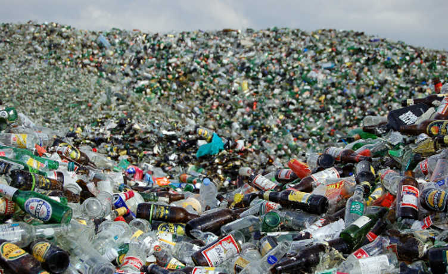

O vidro é uma mistura de areia, barrilha, calcário, feldspato e aditivos que, derretidos a cerca de 1.550°C, formam uma massa semi-líquida que dá origem a embalagens ou a vidros planos. O principal componente do vidro é a sílica, é possível fazer vidro só com a fusão da sílica. Boa parte dessas matérias primas é importada ou provém de jazidas em f ranco esgotamento. Além destas substâncias, existem pequenas quantidades de outras impurezas derivadas da matéria-prima, por exemplo, óxido de ferro, além de outras que podem ser adicionadas intencionalmente de acordo com a qualidade do vidro, or exemplo, corantes (metais como o ferro, cobalto, cromo e manganês).
Existem vários tipos de vidros, dentre eles:
Na reciclagem do vidro, o caco funciona como matéria-prima já balanceada, podendo substituir o feldspato que tem função fundente, pois o caco precisa de menos temperatura para fundir. Os cacos devem ser separados por cor (transparente, marrom e verde). O vidro comum funde a uma temperatura entre 1000oC e 1200oC, enquanto que a temperatura de fusão da fabricação do vidro, a partir dos minérios, ocorre entre 1500oC e 1600oC. Nota-se assim que a fabricação do vidro a partir dos cacos economiza energia gasta na extração, beneficiamento e transporte dos minérios não utilizados. A economia de energia é a principal vantagem do processo, em termos econômicos, pois reflete na durabilidade dos fornos.
O Brasil, no entanto, só recicla 14,2% do vidro que consome, o restante ficando em algum lugar na natureza por tempo indeterminado.
Os cacos de vidro são conduzidos para a indústria de vidro que irá utilizá-los como matéria-prima na fabricação de novas embalagens de vidro. O material é fundido em fornos de altas temperaturas junto à matéria-prima virgem (calcário, barrilha, feldspato, entre outros). O vidro reutilizado (ex.: embalagens) é enviado para novo envase de produtos na indústria.